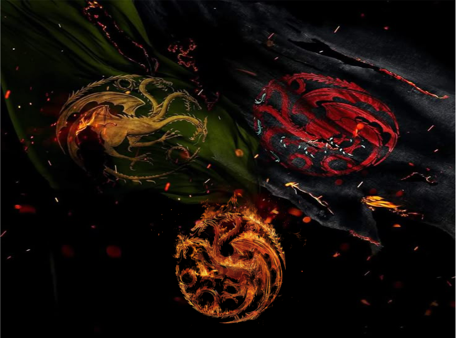
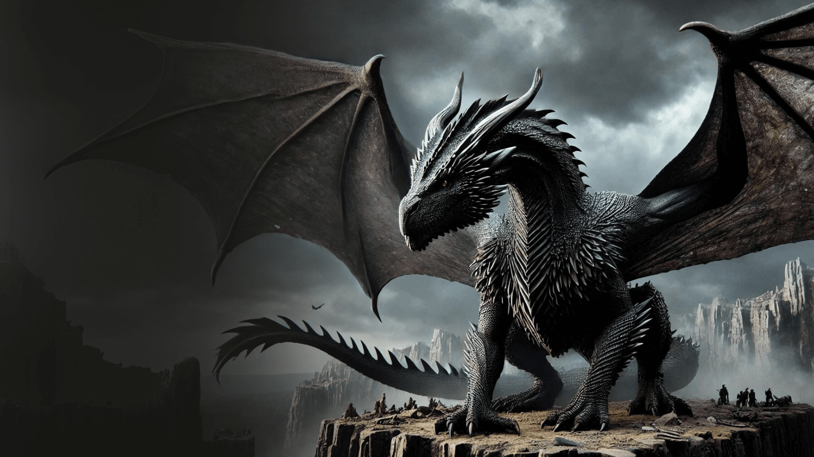
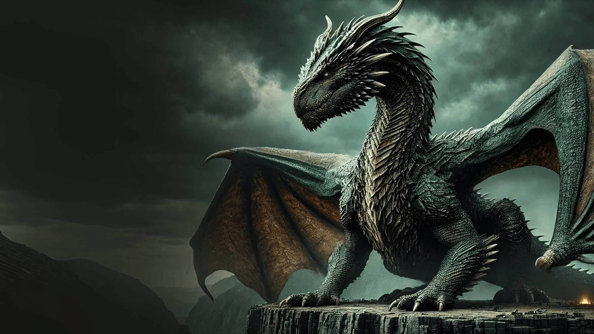
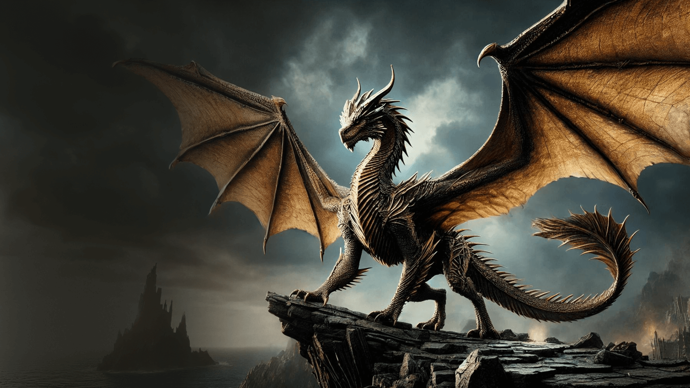
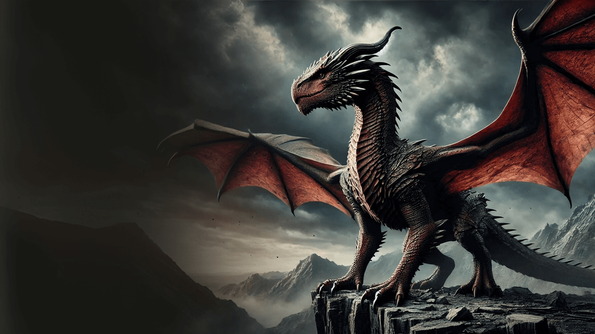
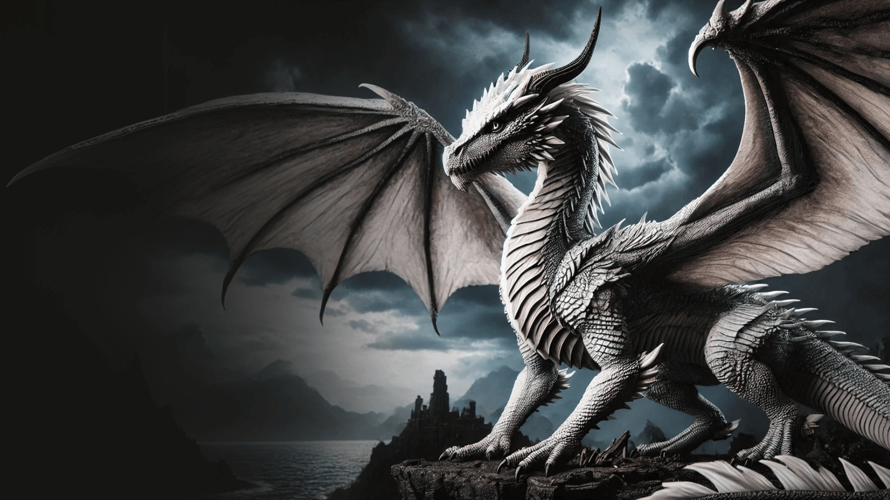
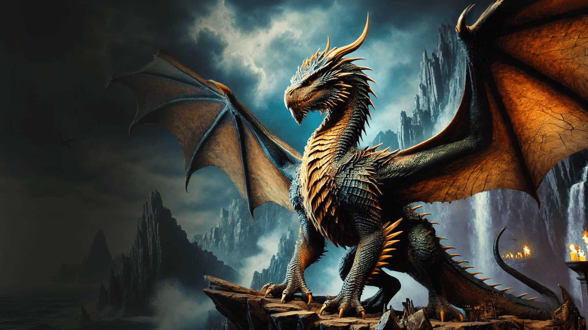
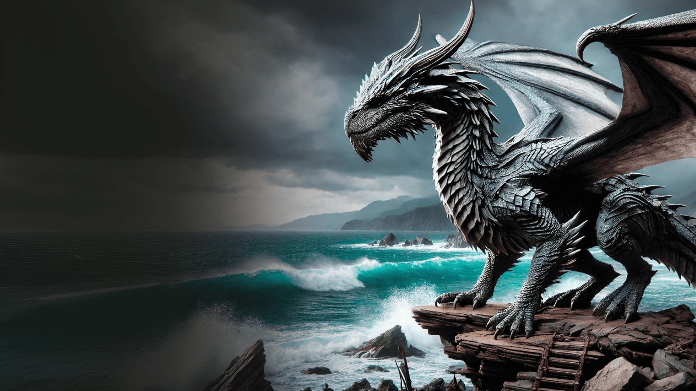

Balerion
Balerion, chamado de Terror Negro, foi um dragão da Casa Targaryen. Ele foi montado pelo rei Aegon I Targaryen durante a Guerra da Conquista.
Vhagar
Vhagar foi uma dragão-fêmea montada por Visenya durante a Conquista, ao lado do Balerion de Aegon o Conquistador e o Meraxes de sua irmã Rhaenys.
Syrax
Syrax foi uma dragão-fêmea. Ela foi montada exclusivamente por Rhaenyra Targaryen. Seu nome veio de uma deusa de Valíria
Sunfyre
Sunfyre, o Dourado, é amplamente considerado o dragão mais belo que já voou pelos céus de Westeros. Suas escamas brilham como ouro puro sob a luz do sol, e suas chamas possuem a mesma tonalidade dourada. Montado pelo Rei Aegon II, ele é uma criatura de poder devastador e uma peça central na guerra dos Verdes.
Caraxes
Caraxes, também chamado de Wyrm de Sangue e Verme Sangrento, foi o dragão montado pelo Príncipe Aemon Targaryen durante o reinado do Rei Jaehaerys I Targaryen e, mais tarde, pelo Príncipe Daemon Targaryen.
Dreamfyre
Uma dragoa esguia e de uma beleza etérea, é uma das criaturas mais antigas e imponentes da Casa Targaryen. Com suas escamas de um azul pálido adornadas com prateado, ela é montada pela Rainha Helaena Targaryen. Sua linhagem é profunda, sendo uma das dragoas mais férteis da história dos Sete Reinos.
Arrax
Arrax foi um dragão montado pelo Príncipe Lucerys Velaryon durante a Dança dos Dragões.
Tessarion
A 'Rainha Azul', ela é uma dragoa notável por suas escamas de um azul cobalto vibrante e garras de bronze. Montada pelo Príncipe Daeron Targaryen, ela é valorizada por sua agilidade excepcional em combate aéreo e pelo fogo azul intenso que expele, tornando-a uma ameaça temível para qualquer exército inimigo.
Vermax
Vermax foi o dragão montado pelo príncipe Jacaerys Velaryon. Ele prosperava e crescia a cada ano. O dragão ficou mal-humorado quando próximo de neve, gelo e frio.A cor de Vermax não é descrita nos livros.
Morghul
Morghul é um dos jovens dragões mantidos nos Fossos dos Dragões de Porto Real durante o reinado de Aegon II. Embora seja um dos mais novos, sua ferocidade e ligação com a linhagem direta dos filhos do Rei fazem dele um símbolo crescente do poder dos Verdes, prometendo ser uma arma formidável à medida que cresce.
Seasmoke
Seasmoke era um dragão cinza-claro. Era grande o bastante para combate durante a dança, mas ainda um jovem dragão, e mais ágil no ar do que seus irmãos mais velhos.